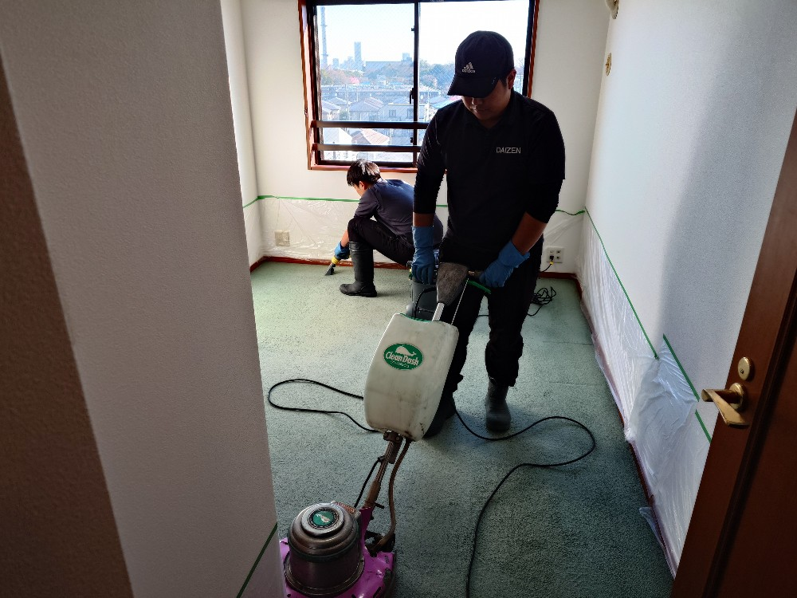
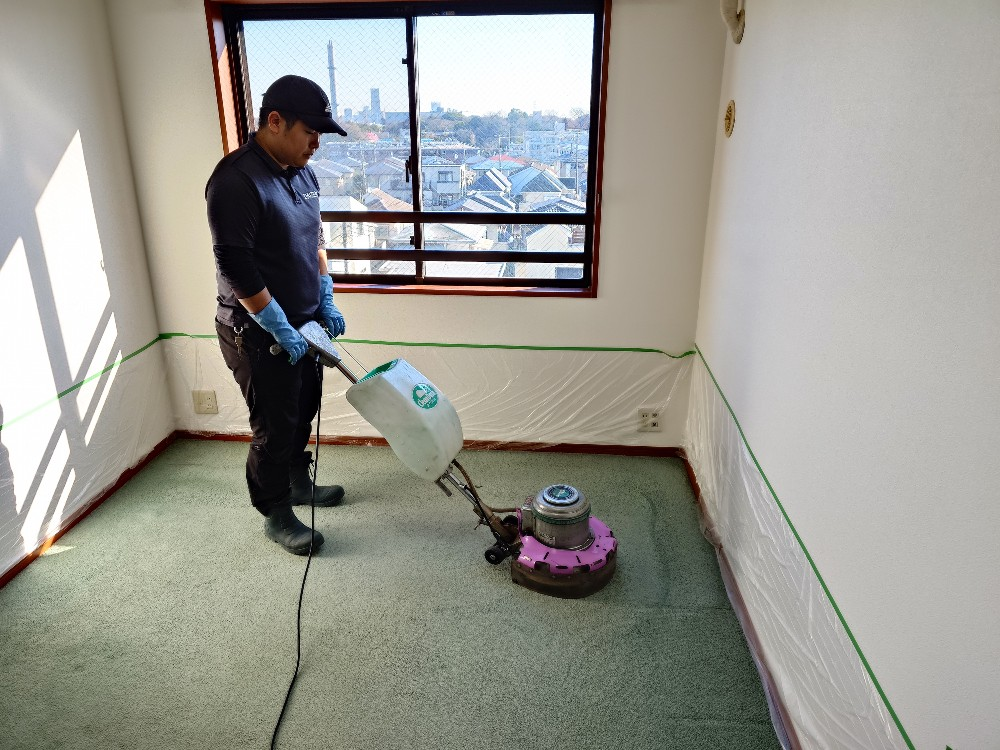
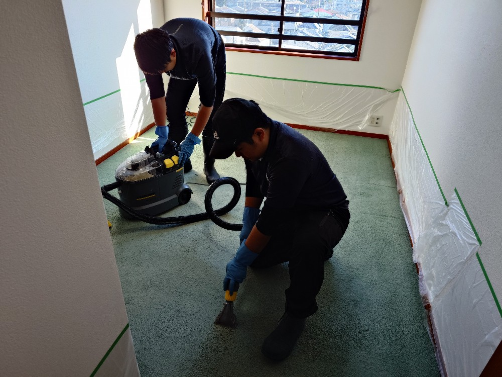
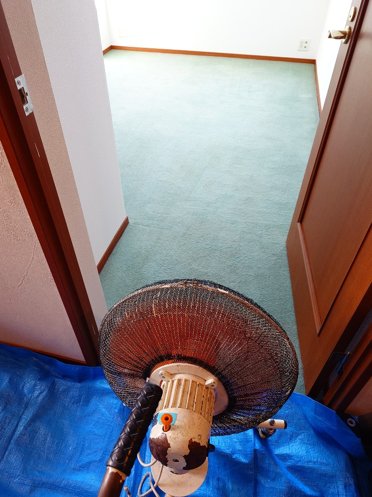
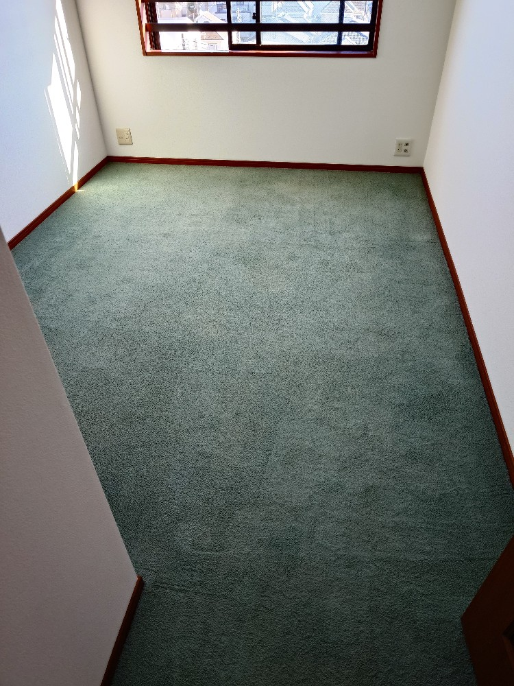

横浜市戸塚区K様ご自宅のカーペットクリーニングをしました!

横浜市戸塚区のK様ご自宅のカーペットクリーニングをしました!K様がこの度ご転居なされたご自宅のカーペットは、長年の使用でホコリ汚れなど、堆積汚れと匂いなどが気になるとのことでした。DAIZENプロフェッショナルメソッドを駆使してカーペットクリーニングを実施することになりました。ドイツ製専用薬剤で、カーペット内部の汚れをカプセル化し、其のカプセル毎こちらもドイツ製専用カーペットリンサー機器で強力に吸引バキュームして、堆積汚れ、ホコリ汚れを除去します。併せてダニ除去、除菌もされてとても爽やかな良いにおいになりました!K様に大変喜んで頂きました、ありがとうございました!




